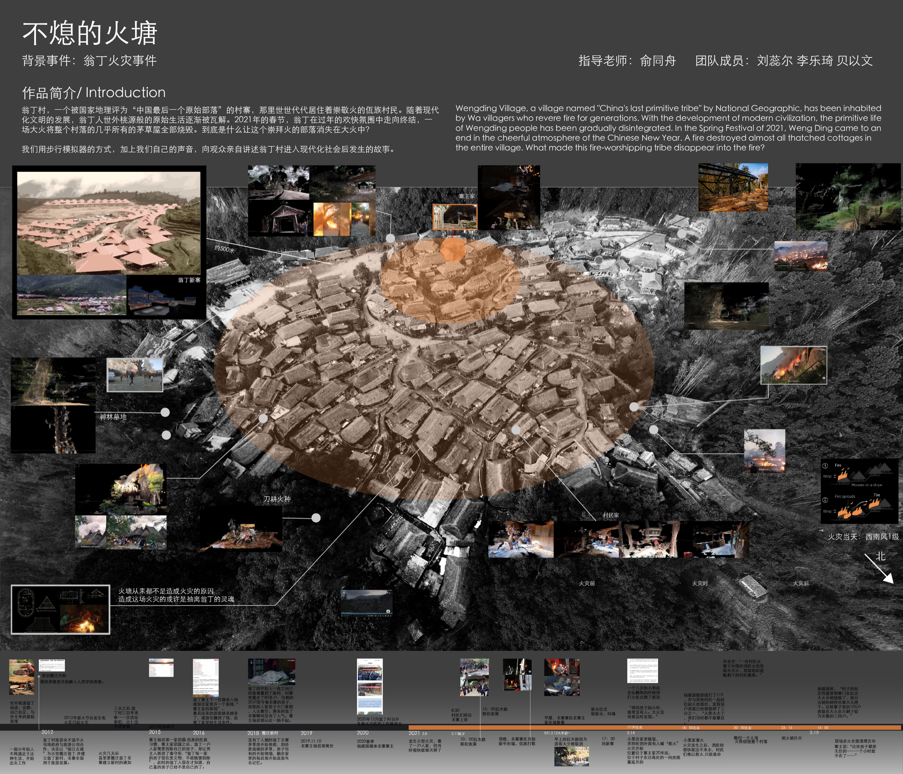
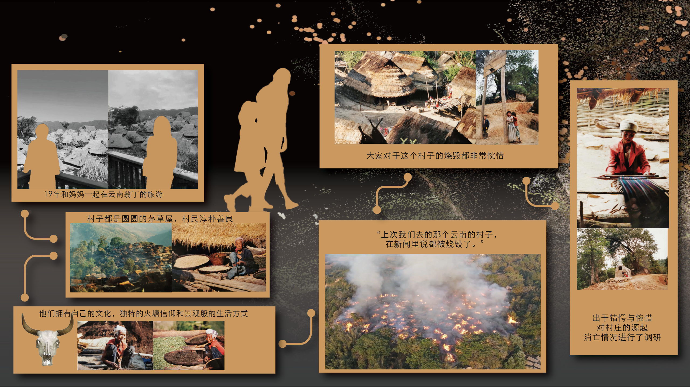
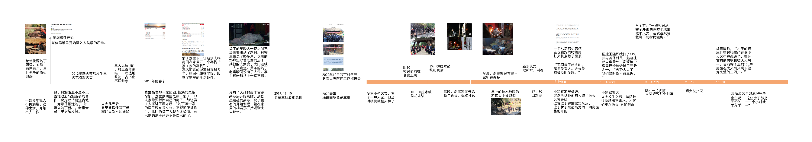
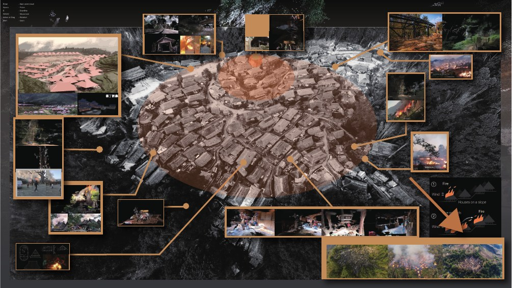
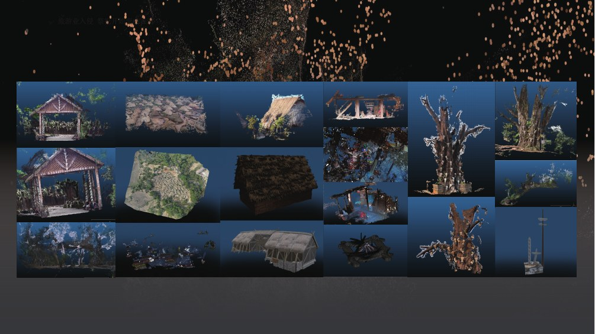
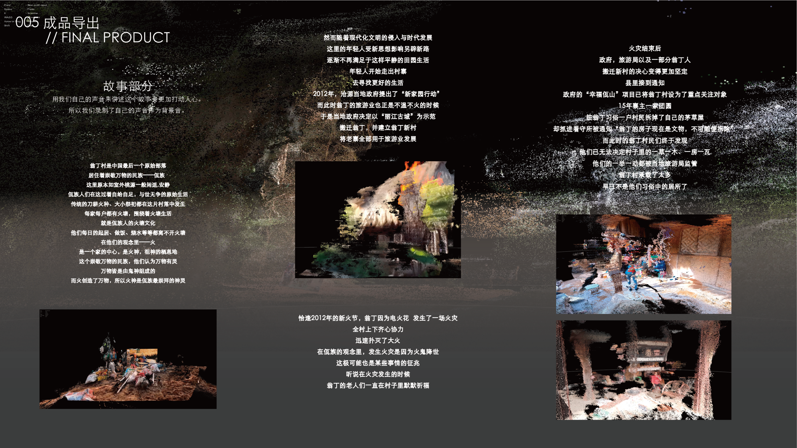
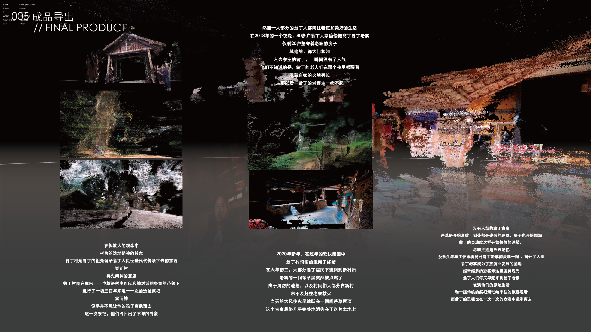
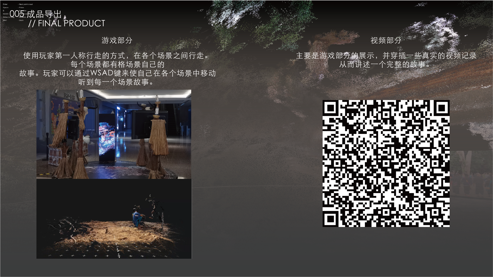

守火
记录火塘、仪式与共同生活，建立可被感知的文化档案。

THE QUESTION / 设计命题
火连接日常、仪式、灾难与重建。
只保留与设计决策有关的场景、人物与行为线索。

通过互联网收集当地图片视频重现民俗风情，还原事件全貌
——“火”既是生活中心，也是共同体维系记忆的方式
只保留与设计决策有关的场景、人物与行为线索。


记录火塘、仪式与共同生活，建立可被感知的文化档案。
把灾难造成的断裂，转化为一段可被理解的空间路径。
让数字点云与真实材料，共同构成新的集体叙事现场。
提取村落、树、茅屋与祭祀空间的点云形态，转化为可漫游的沉浸式空间
————全村落点云模拟，unity搭建点云场景




观众沿着光与点云构成的路径移动，在空间中触发火声、村落环境与人物片段。
杭州黄龙商场展览现场图